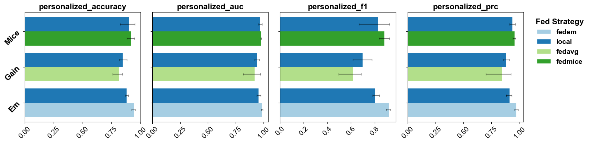
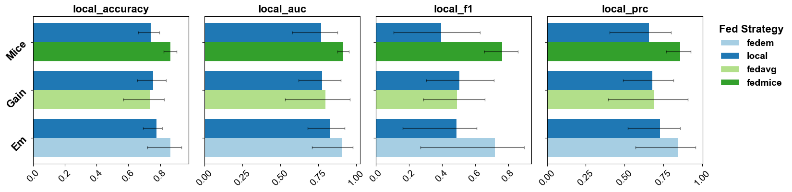
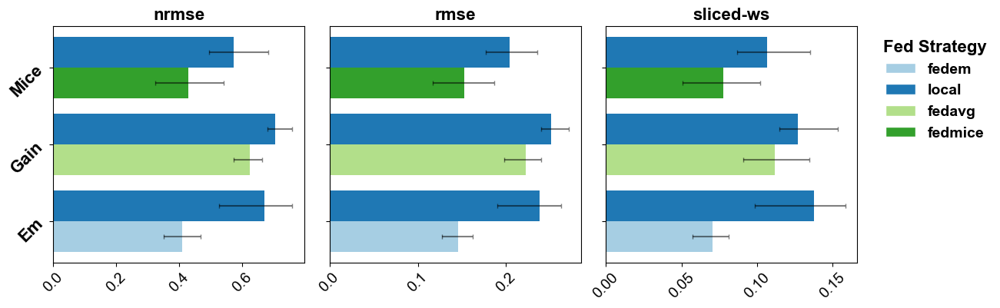
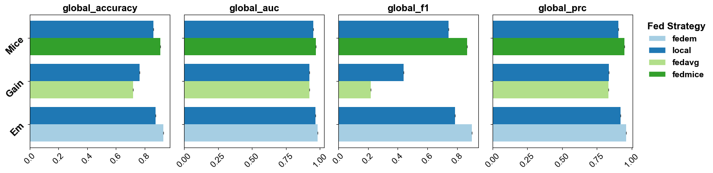

import numpy as np
import pandas as pd
import tabulate
Load Data and Scenario
%load_ext autoreload
%autoreload 2
from fedimpute.data_prep import load_data, display_data
data, data_config = load_data("codrna")
display_data(data)
print("Data Dimensions: ", data.shape)
print("Data Config:\n", data_config)
+--------+--------+--------+--------+--------+--------+--------+--------+--------+
| X1 | X2 | X3 | X4 | X5 | X6 | X7 | X8 | y |
|--------+--------+--------+--------+--------+--------+--------+--------+--------|
| 0.7554 | 0.1364 | 0.0352 | 0.4132 | 0.6937 | 0.1591 | 0.3329 | 0.7154 | 1.0000 |
| 0.7334 | 0.7879 | 0.3819 | 0.3693 | 0.5619 | 0.4830 | 0.4351 | 0.5160 | 0.0000 |
| 0.7752 | 0.1364 | 0.1761 | 0.3290 | 0.7410 | 0.4259 | 0.4644 | 0.5268 | 1.0000 |
| 0.5905 | 0.7424 | 0.2720 | 0.2898 | 0.6920 | 0.3205 | 0.4019 | 0.6290 | 1.0000 |
| 0.7366 | 0.1212 | 0.2465 | 0.3290 | 0.7410 | 0.3249 | 0.5086 | 0.5631 | 1.0000 |
+--------+--------+--------+--------+--------+--------+--------+--------+--------+
Data Dimensions: (5000, 9)
Data Config:
{'target': 'y', 'task_type': 'classification', 'natural_partition': False}
%load_ext autoreload
%autoreload 2
from fedimpute.scenario import ScenarioBuilder
scenario_builder = ScenarioBuilder()
scenario_data = scenario_builder.create_simulated_scenario(
data, data_config, num_clients = 4, dp_strategy='iid-even', ms_scenario='mnar-heter'
)
scenario_builder.summarize_scenario()
The autoreload extension is already loaded. To reload it, use:
%reload_ext autoreload
Missing data simulation...
==================================================================
Scenario Summary
==================================================================
Total clients: 4
Global Test Data: (500, 9)
Missing Mechanism Category: MNAR (Self Masking Logit)
Clients Data Summary:
Train Test Miss MS Ratio MS Feature Seed
-- -------- ------- -------- ---------- ------------ ------
C1 (1125,9) (113,9) (1125,8) 0.47 8/8 6077
C2 (1125,9) (113,9) (1125,8) 0.51 8/8 577
C3 (1125,9) (113,9) (1125,8) 0.46 8/8 7231
C4 (1125,9) (113,9) (1125,8) 0.47 8/8 5504
==================================================================
Benchmarking Pipeline
%load_ext autoreload
%autoreload 2
from fedimpute.pipeline import FedImputePipeline
pipeline = FedImputePipeline()
pipeline.setup(
id = 'benchmark_demo',
fed_imp_configs = [
('em', ['local', 'fedem'], {}, [{}, {}]),
('mice', ['local', 'fedmice'], {}, [{}, {}]),
('gain', ['local', 'fedavg'], {}, [{}, {}]),
],
persist_data = False,
description = 'benchmark demonstration'
)
pipeline.pipeline_setup_summary()
The autoreload extension is already loaded. To reload it, use:
%reload_ext autoreload
==============================================================
Experiment ID: benchmark_demo
==============================================================
Description: benchmark demonstration
Persist Data: False
Evaluation: ['imp_quality', 'local_pred', 'fed_pred']
Seed: 100330201
--------------------------------------------------------------
Imputer Fed Strategy Imp Params Strategy Params
-- --------- -------------- ------------ -----------------
0 em local {} {}
1 em fedem {} {}
2 mice local {} {}
3 mice fedmice {} {}
4 gain local {} {}
5 gain fedavg {} {}
==============================================================
pipeline.run_pipeline(
scenario_builder, repeats = 5, verbose = 0
)
Result Analysis
import matplotlib.pyplot as plt
plt.rc('font', family='arial')
plt.rc('pdf', fonttype = 42)
plt.rc('ps', fonttype = 42)
pipeline.plot_pipeline_results(
metric_aspect = 'fed_pred_personalized',
plot_type = 'bar',
save_path = "./plots/benchmark_fedpred.pdf"
)

pipeline.plot_pipeline_results(
metric_aspect = 'local_pred',
plot_type = 'bar',
save_path = "./plots/benchmark_localpred.pdf"
)

pipeline.plot_pipeline_results(
metric_aspect = 'imp_quality',
plot_type = 'bar',
save_path = "./plots/benchmark_impquality.pdf"
)

pipeline.plot_pipeline_results(
metric_aspect = 'fed_pred_global',
plot_type = 'bar',
save_path = "./plots/benchmark_fedpredglobal.pdf"
)

data = pipeline.show_pipeline_results(
format = 'dataframe',
metric_aspect = 'imp_quality',
metric_name = 'rmse',
show_round_variation = False
)
data.to_excel("./plots/benchmark_impquality.xlsx")